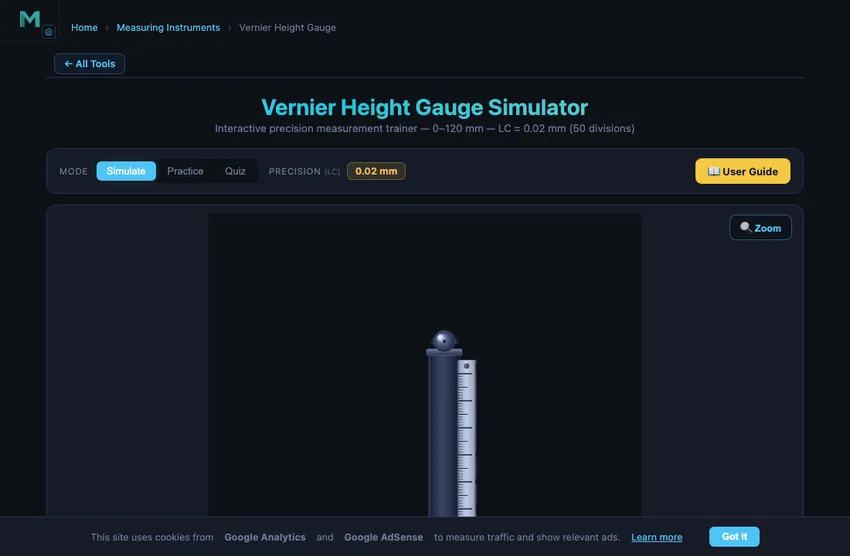
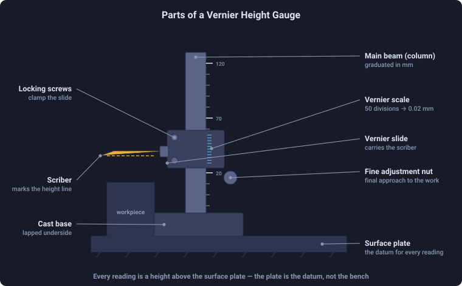

Vernier Height Gauge Simulator
Interactive precision measurement trainer — 0–120 mm — LC = 0.02 mm (50 divisions)
The least count of a vernier height gauge is 0.02 mm — one main-scale division (1 mm) divided by the 50 vernier divisions, i.e. 1/50 mm. A 20-division gauge reads to 0.05 mm; dial and digital height gauges typically read to 0.01 mm.
1 Overview
This vernier height gauge simulator is a free online tool for practising how to read a height gauge with 0.02 mm precision (50-division vernier scale). The height gauge is a precision measuring instrument mounted on a vertical column with a datum surface (base), used for measuring and scribing heights in toolrooms, quality control labs, and inspection departments. This simulator covers the 0–120 mm range and is designed for engineering students, engineering diploma candidates, and vocational trainees preparing for metrology assessments.
2 Setting the Zero
The simulator opens in Simulate mode with the carriage at a default height. To begin:
- Drag the sliding carriage up or down along the vertical column to set any height from 0 to 120 mm. You can also use arrow keys or the scroll wheel for fine adjustment.
- The info row below the canvas shows the MSR (Main Scale Reading), VSR (Vernier Scale Reading), LC (Least Count = 0.02 mm), and the full TR formula with live values.
- Use the Zoom button to magnify the vernier coincidence area on the vertical scale for accurate reading.
3 Taking a Reading
In Simulate mode the carriage slides freely on the column. The formula panel breaks down the reading: TR = MSR + (VSR × 0.02). The main scale is engraved on the vertical beam in 1 mm divisions, and the vernier scale on the sliding carriage has 50 divisions spanning 49 mm. When the nth vernier division aligns with a main scale graduation, the fractional part of the measurement is n × 0.02 mm. Use this mode to understand how height changes correspond to vernier coincidence shifts.
4 Practice & Quiz
Practice mode: A random height is set and the carriage is locked. Read the main scale and vernier scale, then type the total reading into the input box. Click Check for instant feedback showing whether your answer is correct. Click New for another random height. Your running score is displayed.
Quiz mode: A timed series of 5 questions tests your height gauge reading accuracy under exam conditions. After completing all questions, a results panel shows your score, star rating, and a question-by-question breakdown with the correct answers.
5 Understanding the Reading
The height gauge reading follows the same vernier principle as a vernier caliper:
- MSR (Main Scale Reading): The last whole millimetre mark below the vernier zero on the vertical beam.
- VSR (Vernier Scale Reading): The vernier division (0–49) that coincides exactly with any main scale line.
- LC (Least Count): 0.02 mm for a 50-division vernier scale.
Total Reading = MSR + (VSR × 0.02). Example: MSR = 47 mm, VSR = 18 → TR = 47 + (18 × 0.02) = 47.36 mm.
6 Workshop Tips
- Always place the height gauge on a clean, flat surface plate (datum surface) — any debris under the base introduces height errors.
- Use the fine adjustment knob to make micro-adjustments before locking the carriage — this ensures the scriber tip touches the workpiece without excess pressure.
- Check for zero error by lowering the scriber to the surface plate and confirming the reading is exactly 0.00 mm before measuring.
- When scribing layout lines, ensure the workpiece is properly degreased so the scribed line is clearly visible.
How to Read a Vernier Height Gauge — Online Practice Simulator

A Vernier height gauge is a precision measuring instrument used to measure the height of a workpiece from a reference surface (usually a surface plate or granite table). With a 0.02 mm least count and a 50-division vernier scale, this instrument is widely used in quality control, toolroom work, and precision engineering training.
Step-by-Step: How to Read a Vernier Height Gauge
Step 1 — Place on surface plate: The height gauge base sits on a precision surface plate, providing the reference plane. Step 2 — Main Scale Reading (MSR): Read the last whole millimetre mark below the vernier zero line on the main scale. Step 3 — Vernier Scale Reading (VSR): Find which vernier graduation coincides with a main scale line. Count that division number. Step 4 — Total Reading (TR): Apply TR = MSR + (VSR × LC) where LC = 0.02 mm.
Example Reading
If the main scale shows 47 mm (MSR = 47) and the 18th vernier division aligns with a main scale line (VSR = 18), then: TR = 47 + (18 × 0.02) = 47 + 0.36 = 47.36 mm.
Vernier Height Gauge Parts and Functions

Key parts: base (sits on surface plate), vertical beam/column (carries the main scale), sliding carriage (carries the vernier scale and scriber arm), scriber/measuring jaw (the actual measuring tip), locking screw (clamps carriage at reading), and fine adjustment knob (for precise positioning).
50-Division Vernier — Why 0.02 mm?
The vernier scale has 50 divisions that span 49 main scale divisions. One vernier division = 49/50 mm = 0.98 mm. The difference between 1 main scale division (1 mm) and 1 vernier division (0.98 mm) = 0.02 mm — this is the least count. When the nth vernier division coincides with a main scale line, the measurement is MSR + n × 0.02 mm.
Least Count of Vernier Height Gauges — and How It Compares
Least count is the smallest change an instrument can resolve. For a vernier height gauge it is set entirely by how the vernier scale is divided: one main-scale division divided by the number of vernier divisions. Vernier height gauges are most commonly 50-division, giving 0.02 mm.
| Instrument | Scale / divisions | Least count | How it is derived |
|---|---|---|---|
| Vernier height gauge | 50 divisions | 0.02 mm | 1 mm ÷ 50 |
| Vernier height gauge (coarse) | 20 divisions | 0.05 mm | 1 mm ÷ 20 |
| Dial height gauge | dial indicator | 0.01 mm | set by the indicator |
| Digital height gauge | electronic encoder | 0.01 mm | encoder resolution |
| Vernier caliper | 50 divisions | 0.02 mm | 1 mm ÷ 50 |
| Micrometer (screw gauge) | 50 divisions | 0.01 mm | 0.5 mm pitch ÷ 50 |
In inch units a vernier height gauge is usually divided to 0.001 in. Note that least count is not the same as accuracy — it is the finest division you can read, while accuracy also depends on the surface plate, the squareness of the column, parallax and the operator’s feel for scriber contact. A gauge reading to 0.02 mm may still be several hundredths out if it is used on a worn plate.
Applications of the Vernier Height Gauge
- Measuring the height of machined components from a datum surface
- Scribing layout lines at precise heights on workpieces
- Checking step heights and shoulder lengths on turned parts
- Verifying parallelism of surfaces on a surface plate
- Setting cutting tool heights on lathes and milling machines
Why the Surface Plate Is Half the Tool
A height gauge is useless without a precision surface plate underneath it. The plate is the reference datum from which every height is measured. Workshop-grade granite plates (the standard) are flat to about 5 µm per 600 mm; inspection-grade plates are flat to 1 µm per 600 mm. The plate’s mass (typically 50−200 kg) keeps it vibration-free; its hardness keeps it from wearing under repeated tool contact; its low coefficient of thermal expansion keeps the reference stable through temperature variations that would distort a steel plate.
Cast iron plates were the historical standard from the 1850s to about 1960. Granite displaced them because it doesn’t corrode, doesn’t pick up burrs from contact wear, and resists thermal cycling better. Most modern toolrooms have both: cast iron for rough work, granite for inspection.
Layout Work — What the Scriber Is For
The scriber tip on a height gauge is not primarily a measuring jaw. It is a marking tool. The classic workflow:
- Coat the workpiece with layout dye (typically a blue alcohol-based marking fluid).
- Reference the height gauge to a known datum — usually a face of the workpiece, set up so it sits parallel to the surface plate.
- Set the carriage to the first layout dimension (say 25.00 mm), lock it, and draw the scriber across the workpiece face. A fine scratched line appears in the dye at exactly that height.
- Reset the carriage to the next dimension and repeat. Hole centres, edge boundaries, machined-surface boundaries all get scratched in.
- The machinist follows the scribed lines with mill or drill for the first-cut work, then dial-indicates for final precision.
This sequence has not changed since the 1900s. CNC machining has reduced the need for layout work, but on one-off parts, prototype tooling, and repair work, a height gauge plus surface plate plus scribe is still the fastest way to lay out hole patterns and machined boundaries.
Standards and Calibration
- ISO 13225:2012 — Geometrical product specifications (GPS) — Dimensional measuring equipment — Design and metrological characteristics of mechanical height gauges.
- BS 1643 — the British Standard for precision height gauges.
- DIN 866 / DIN 876 — standards for granite surface plates, with class 00, 0, 1, 2 designations covering flatness from 1 to 10 µm per metre.
Explore Related Simulators
If you found this Height Gauge simulator helpful, explore our Vernier Caliper simulator, Dial Gauge simulator, and Micrometer Screw Gauge simulator for more hands-on practice.